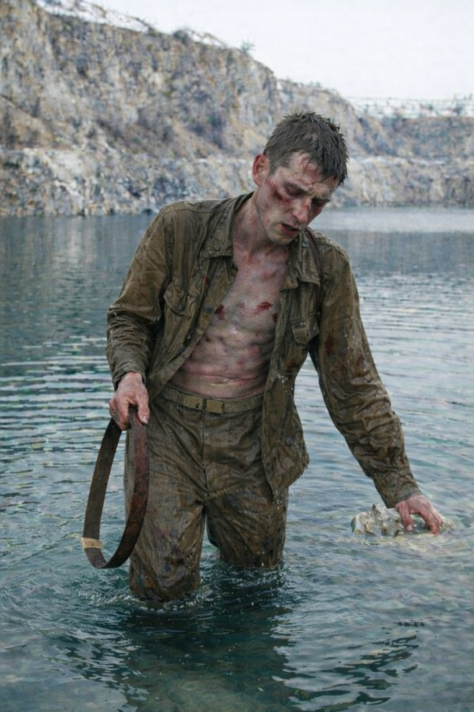

Часть 1
Глава 3.1

Сначала Ханоху стало досадно: вне плоти ему было так легко и свободно. Бескрайнее знание – это восторг – он раньше и представить себе не мог, как это чудесно!
Потом он понял, что его окружает вода. Немного подумав, он решил, что и это не плохо — Ханох с детства любил плавать в бассейне.
Правда не очень приятно, что вода лезла сквозь сжатые губы, давила на кожу и щипала глаза. К тому же она была слишком тепла… и в ней было что-то такое… такой плохой привкус… в ней… яд?!
Вода липла… липла?.. Она липла к коже, она выжигала глаза. Нет, это была не вода из бассейна отца. Та – жизнь возвращала, а эта – брала!
И еще: он ослеп. Сколько Ханох не таращил глаза, он не видел ни блика, ни проблеска света. Одна лишь густая и вязкая тьма.
Ханох заметался - он не в дворце!
Что это за дрянь, наследник постиг очень быстро: это была тяжелая часть от чёрного масла земли. Вдобавок вода была полна частиц от разных металлов.
Мелькнул вопрос: «Кто все это в воду подмешал и зачем?» Может, пирамидка перенесла его в город?.. Но как? И если это возможно, то почему владетели не знают об этом?
Мысль оборвалась: на грудь что-то давило. Он ощупал себя и обнаружил прочную ткань, в которую были наложены камни.
«Чтобы не всплыл? Я умер, и меня погребли? В море? В воде? Под землей? Возле источника черного масла?»
Ханох совсем перестал понимать, что с ним происходит: все это не укладывалось ни в какую теорию.
Он отбросил догадки - в такой гадости даже аношиты своих не хоронят!
Ханох рванул ткань - и камни ушли в глубину. Стало легче. Но воздух в легких кончался.
Так не бывает. Каждый потомок Адама умел через кожу втягивать жизненный газ из воды. Это естественно так же, как младенцу кричать при рождении.
Но Ханох задыхался.
Вспышки воспоминаний мелькали: отец, пирамидка, тайны жизни и смерти, которые он постигал из-под палки, а потом вдруг постиг, и которые снова бесповоротно забыл.
Сильный спазм диафрагмы его чуть не вынудил вскрикнуть. Пришел настоящий испуг: он сейчас наглотается и захлебнется. Как будто простой человек!
«Я не хочу!»
И вдруг его озарило: Ханох понял, что делать.
Он зажмурился, чтобы паника не перекрыла то знание, что пришло ему свыше.
Надо открыть мембраны под кожей. И прекратить судороги.
Ханох заставил себя открыть рот и позволить воздуху выйти из легких. Все, о них надо забыть, под водой они ему не смогут помочь.
«Не грудью дышать, а поверхностью кожи».
Он сосредоточился на внутренней стороне бёдер, на плечах, на спине – на тех местах, где сетка сосудов была гуще всего. Он представил, как раскрываются поры — не на коже, а те, что под ними - тончайшая плёнка из пор, в которой струится его красная кровь. Кровь его - красная? Красная?!
Нет, это потом! Сейчас главное - черное масло земли.
Дело в нем! Тонкая пленка, сквозь которую воде не пробиться. Она обволокла все его тело. Ханох видел однажды, как жабры у рыбы покрыли смолой. И так же, как рыбу, его душила дрянь из воды.
Он рванулся, почувствовал, что с каждым движением вода давит сильнее и развернулся в несколько мощных гребков. Давление стало слабеть – значит теперь он гребет туда, куда нужно.
Пленка от резких движений ослабла, и ему стало легче. Ханох распахнул руки — словно собрался Нааму обнять. Ему надо вытащить весь газ из воды.
Лёгкое жжение. Тысячи острых иголок… Голова постепенно становится ясной. Медленно. Но надо терпеть. Вот и судороги уже отступают.
Ему нужно не дать прекратить воде движение вдоль его тела. Иначе жирная плёнка снова облепит его.
Красная кровь бежала по жилам, доставляя в мышцы и мозг жизненный газ. Он замедлил биение сердца — сейчас ни к чему тратить силы на избыточный пульс.
Он мог дышать через кожу, только если плёнка снова не облепит его.
Теперь можно было подумать. Нужно было понять, где верх, куда плыть. Он прислушался к ощущениям и по движению вдоль тела воды, по давлению, Ханох понял, что погружается. Он подавил панику и дал телу напитаться жизненным газом. Только после этого он начал грести.
Наконец он выбрался на поверхность, вытолкнул из легких остатки воды, вдохнул полной грудью… И разряженный воздух резанул легкие. Он был не лучше воды, и отравы в нем было не меньше.
- Где я? – Отплевываясь думал Ханох – избавиться от мерзкого вкуса воды оказалось не просто. – Как этим дышать?
Шатаясь и продолжая плеваться, он добрался до берега и рухнул на камень. Сгорбился и, уперев лоб в ладони, обмяк.
Успокоив дыхание, он поднял голову и медленно обвел взглядом скалы, окружающие каменную яму с водой. Хотел почесать бороду, но наткнулся на выбритый подбородок и осмотрел свое тело. Тело усохло и во многих местах кровоточило красным. Ханох поднял к мерцающим звездам глаза и чуть не завыл.
Рост сильно уменьшился. А руки, которыми он без труда выдергивал из земли молодые деревья, стали тонкими веточками, тоньше тех самых деревьев. Мышц почти не было – теперь понятно, почему он так запыхался!
Он снова и снова разглядывал руки и ноги и рассматривал свое отраженье в воде. Он садился и снова вставал, чтобы посмотреть на свой облик. Он в недоумении тряс головой, надеясь, что наваждение сгинет и он проснется уж если не в покоях Наамы, то хотя бы недалеко от дворца.
На теле, и без того истощенном, было множество ран от ударов, не от воды. Он вспомнил о камнях, набитых под ткань. Но снова ощупав ушибы, он пришел к выводу, что камни, даже сильно прижатые к телу, не могли нанести таких ран. В чем-чем, а уж в этом-то Ханох толк понимал.
Зато плохо понимал назначение тряпок. Он снял гимнастерку и галифе, разложил на камнях и рассмотрел в тусклом свете луны. Он постиг, что это вид какой-то странной одежды. Но почему все так сложно и грубо?..
Он оставил в покое х/б и продолжал размышлять.
«Это все не случайно. Я нашел пирамидку… и посмотрел на нее. И я умер. Я помню, я видел своё тело внизу, у бассейна. Потом голос сказал, что я тороплюсь. И я оказался в этой мерзкой воде. – Он посмотрел на ставок и на скалы, вздохнул, чуть не зашелся кашлем от вонючего воздуха, и поправил себя. – Я оказался здесь. Значит… пирамидка… Она ключ ко всему!»
Перед мысленным взором Ханоха всплыли письмена и живой немигающий глаз.
Мысли так захватили его, что он не заметил двоих наверху. Очнулся только, когда услышал их крики.
- Смотри! – Один судорожно дергал рукой, указывая на Ханоха. – Витёк, гля, ну, ты видишь? Смотри - он?
- Да где же он, где? – Второй щурился в темноту. – Блин… быть не может!
- Вон, смотри, он вон там! – Первый снова тыкал пальцем в направлении Ханоха.
- Мать твою, он вылез! Но как?! Мы проверили - он не дышал… Сколько прошло? Он давно утонул! Это не он, говорю!
- Он – не он – вон сидит! – Первый солдат схватился за голову. - Игоряня, а делать-то чё?
- Чё, чё! – озлобился Игорь. – Его надо обратно!
– Да ну на! - Возразил подельник, присматриваясь. - Мы его так крепко связали! Это не может быть он! Мы утопим другого!
- Витька, ты охренел? Тут что – пляж? Ты думаешь все подряд приходят ночью купаться? Это он - больше некому!
- Да хрен его знает! – Орал Витек. – Он не мог! В нем камней было – половина КАМАЗа!
- Ну все, хватит болтать! Рванули - он не должен уйти! Иначе заложит!
Ханох не расслышал ни слова из перебранки солдат. Он среагировал на движение, на звук. Посмотрел вверх, на скалы и увидел двоих.
Они бежали к нему. Дар проникать в суть вещей взвыл об опасности.
Ханох не спускал взгляда с бегущих – и с каждым мгновением убеждался все больше и больше: их цель – это он! Об этом кричали камни, тянувшие его в глубину, синяки, покрывавшие тело и реакция на него этих двоих.
«Их послали, чтобы убить. – Утвердился в догадке Ханох. - Они враги, им нужна моя кровь!»
Давно не чищенные сапоги побелели от пыли, распущенные ремни болтались у паха, грязные гимнастерки расстегнуты.
Достойные следят за собой, достойные не носят обноски!
Волосы, такие короткие, что бегущие кажутся лысыми.
Только господин имеет право носить длинные волосы – наголо бреют рабов!
Он перевел взгляд на свою одежду, лежащую у его ног на камнях, потом потрогал макушку. Он такой же, как и они.
«Значит, я тоже раб?..»
Ханох в изнемождении опустился на камень. Он потерял целый мир, он стал краснокровным. Теперь выяснилось, что он оказался рабом. Наследник великого рода, любимец рабынь и шмиры, сын того, перед кем трепетали - он стал краснокровным рабом. Может все же он спит?
Он помнил, как ярился отец. Помнил, как не знал, отвечать или нет. Помнил, как тот собрался его наказать. Помнил Нааму, бассейн, пирамидку…
Он нагнулся и поднял гимнастерку. Уже почти надел на себя, но внезапно, ему пришла в голову мысль, что эта одежда раба.
Ханох швырнул гимнастерку на камни. Пусть у него кровь покраснела, но от этого он не станет рабом!
Ханох не был неженкой – он умел убивать. Он знал, что нужно убить, чтобы тебя самого не убили. Он знал, что единственным ответом на попытку убить, может стать только кровь нападающих, вытекшая на землю до капли. Иначе оклемаются, придут - и тогда берегись!
Один раб ускорился. Он крутил над головой свой ремень - тяжелая пряжка поблескивала в свете луны. Его глаза разгорались – он ярил сам себя. Он готовился убивать.
Второй решил, что камнем будет сподручнее, чем солдатским ремнем. И пока подбирал камень - сбился с ритма, отстал.
Ханох удивился, какими неумелыми были рабы. Воин должен сохранять хладнокровие, а они горячили себя. Ремень для схватки – смешно, им хорошо только беспомощных бить. К тому же их одеяния не годятся для боя.
«Как можно было доверять таким неумехам? - Подумал Ханох.
«Наверное, рабы не прошли обучения. А может, хозяин решил просто проверить верность рабов? Тогда он поступил очень глупо – подранок опасен втройне!»
Ханох сделал вид, что не готовится к схватке.
Раб сходу ударил ремнем.
- Щенок, - сказал громко Ханох, уходя от удара. - Краснокровные, прежде чем бить, должны успокоить дыханье!
И осек сам себя.
- Я-то тоже теперь краснокровный!
Раб пролетел по инерции мимо, споткнулся о камень и растянулся возле воды.
Ханох скользнул глазами по своим жалким рукам. Нет, удар нужной силы не выйдет. Он прыгнул на загривок раба и всем телом рванул подбородок назад. Как барану. Вот только у барана более гибкая шея.
Позвоночник хрустнул, и раб обмяк. Ханох наступил ему на спину ногой, для надежности вывернул шею и отпустил - голова с плеском ударилась о каменистое дно.
Убедившись, что нос и рот раба полностью покрыты водой, Ханох обернулся ко второму рабу. От скорости расправы тот замер, как вкопанный.
Ханох усмехнулся презрительно и направился к трусу. Тот мгновенье еще постоял, потом дернулся - камень выпал из разжавшихся пальцев – раб рванул прочь. Жизнь была для него дороже приказов хозяина.
Ханох, с детства усвоивший – никогда не оставлять врагов за спиной – побежал вслед за ним. Раб поскользнулся и упал в мелководье. Ханох подбежал и вскочил ему на спину. Раб попытался скинуть его, поднялся на четвереньки, но Ханох сдавил его бока коленями и навалился всем телом на плечи.
Раб рухнул в воду лицом. Ханох перебрался на плечи и всем весом давил. Сопротивление медленно слабло. Тогда Ханох встал на колени и вдавил лицо раба в воду.
Когда сопротивление почти прекратилось, Ханох встал и наступил ему ногой на затылок. Немного постоял, следя за цепочкой мелких пузыриков, поток которых быстро иссяк. Тело напавшего дернулось в последней агонии. Когда конвульсии кончились, Ханох прополоскал ноги и руки в воде и вышел на берег.
Ночь звенела — цикады стрекотали так громко, словно хотели его оглушить. На кромке воды лежал труп раба, чуть поодаль — второй. Они словно хотели напиться и опустились к воде. Но руки их подогнулись, и они упали лицом в водную гладь.
Таких жалких врагов у Ханоха еще не бывало! Даже дети дрались лучше этих рабов.
Тем не менее в хилом теле силы иссякли, и ноги дрожали. Последний бой и усилия выплыть, вместе с предыдущими избиениями раба, в теле которого он оказался, вымотали его до предела. Ханох собрал все свои силы, потому что отдыхать было нельзя! Ни один господин не простит убийства рабов. Ханох закусил губу, почувствовал вкус железа во рту, рывком схватил труп и, кряхтя, потащил.
Скользя на мокрых камнях, Ханох тянул убитого, стараясь идти по воде — чтобы на берегу не оставалось следов. Вода чавкала, хлюпала у него под ногами, и каждый шаг отзывался гулким ударом в висках.
Почти теряя сознание, он уложил трупы рядом. И сам упал возле них, словно труп. От тел тянуло застоявшимся потом и еще чем-то гнилостным, таким смрадом, природу которого он не мог распознать — он не знал табака и не знал вони, пропитавшей плоть и одежду.
Он разобрался с ремнями — ослабил, перехватил, затянул их так туго, что кожа на руках побелела. Ханох пришел в ярость от собственной немощи, от дрожи в руках. Судорожно дыша, ползая на четвереньках на берег, он набил их гимнастёрки камнями. Телам нельзя было всплыть, пока он не уйдет далеко. А еще лучше — чтобы они никогда не всплывали.
Теперь — на середину ставка. Там глубже всего. Он там был, и он знал.
Он посмотрел на одного, потом на другого. Снова на первого. На середину ставка. И у него вырвался вздох.
Он еле стоял на ногах. Сплавать два раза? На это у него не осталось ни силы, ни воли.
Стиснув челюсти, он схватил обоих за ворот и оттолкнулся ногами от дна. Сквозь дымку в сознании он вспоминал, как любил купаться и плавать…
Он плыл, работая только ногами. Глубина так и тянула его, будто мёртвые торопились скорее под воду. Но их рано было еще отпускать.
При каждом гребке перед глазами темно. Руки немели. Но он плыл упрямо, вслепую, не думая, пока не почувствовал под собой глубину. И тогда разжал пальцы.
Тела пошли вниз — медленно, грузно. Он перевернулся на спину и, хватая ртом воздух, зажмурился.
…Когда он ногами задел каменистое дно, он встал шатаясь, сделал пару шагов и упал. С четверть часа не шевелился. Потом выполз на берег, с трудом преодолевая брезгливость оделся и схоронился в кустах.
Грязная вода чужого мира стекала с него. Он смотрел в небо и радовался - он смог выжить, выплыть, отбиться! В чужом мире, в немощном теле раба! Приговоренного к смерти, убитого и похороненного! Он истинный наследник отца!
Приподнявшись на руках, он проверил, не оставил ли следов на камнях. Луна скрылась за тучкой, и пришлось напрячь зрение, чтобы хоть что-то увидеть. Он подумал, что камни следов не хранят, опустил голову на руки и наконец позволил себе закрыть веки.
- Возьми душу за душу, око за око, зуб за зуб, руку за руку, ногу за ногу, ожог за ожог, рану за рану, ушиб за ушиб, - мелькнуло у него в голове.
Он думал о своих никчемных убийцах.
- Это правда, - прошептал он. – Если не отмстить, то вслед за зубом отнимут и руку, и душу…
Сознание погасло. Ханох ухнул в темную бездну.
В забытьи он уловил звук мотора. Не просыпаясь, мысленно потянулся к нему.
К ставку двигалось нечто. Металл, дерево и еще что-то какое, о чем не ведал Ханох. Оно тарахтело и выбрасывало из себя едкий дым. Ханох решил, что оно ему снится.
Аппараты, созданные на основе знаний Адама, были совершенными и работали, не нанося вред никому, разумеется, если они не предназначались для ведения боя. Они работали по законам, лежащим в основе вселенной. И Ханоха поразило, что это вот нечто, было настолько нелепо, что наносило вред не только всему вокруг, но даже и себе самому! Его колеса, вгрызаясь в землю терзали её, поднимая столб пыли и вырывая растения, по которым оно безжалостно перло. Огонь от сгорания плохо очищенных фракций масла земли, непрерывно пульсировал внутри устройства и перекалял его части для того, чтобы жар, путем многих преобразований и бесполезных потерь, порождал силу движения. Дым от сгорания отравлял все живое. Только теперь Ханох понял, откуда бралась эта мерзкая вонь, которую он вдыхал вместе с воздухом.
Такая нелепица! Зачем нужно то, что тебя убивает? Почему не сделать аппарат безопасным? Ханох, наделенный наследственным даром проникать в суть вещей, не мог не видеть ошибок, и несовершенства его. При всем этом, Ханох понимал, что аппарат был мощным и тяжелым, тяжелей и мощней, чем аппараты городских мастеров.
Но зачем вещь, которая причиняет столько вреда? Какой смысл в устройстве, которое губит и окружающих, и даже себя?
В нем были люди. Не внутри - в деревянном коробе сзади. Ветер трепал волосы, сильно трясло, и они вцепились в борта. Люди, как и всё в этом мире, были грязные и не очень здоровые. Некоторые - очень больные, хотя и не обращали на это внимания. Ханоху показалось, что люди не подозревают об этом, считают себя такими, как все. Хотя солнце только вставало, большинство уже было усталыми.
Рядом с людьми в коробе дребезжал инвентарь – вилы, мотыги, лопаты и ведра. Инструмент был Ханоху знаком – подобный давали и работникам Йереда.
Недоумение захлестнуло Ханоха. Где знания законов вселенной, где достижения городских, где умения их мастеров? Почему не применяют их знаний? Где он вообще?
В одном из свитков Ханох прочитал о кристалле миров. Там говорилось о том, что будущее, настоящее и прошлое существуют все разом, что все события случились-случатся и слиты в один большой ком. Но так как вариантов событий бесконечное множество, этих комов тоже много. И человек, каждое мгновение делая выбор, перемещается по соседним комам. Он никогда не верил в эту заумную чушь. А вот теперь сомневался.
«Может, и меня перебросило?» - Подумал Ханох. – «А может, все потомки Адама погибли, и только я один выжил благодаря пирамидке?»
Но ведь нет силы, способной убить всех членов семейства Адама. Или есть?.. От этой мысли его зазнобило.
Он потянулся мыслями к людям. Обычные, сломанные и сломленные, неправильные. Не такие, которых он знал до сих пор. Их полуотравленные тела были разлажены, как их аппарат. Как будто кто-то нарочно испортил.
Лица больные и пыльные. На них: недосып, недовольство, усталость. И безнадега.
Иногда в коробе кто-нибудь бросал пару реплик. Им отвечали, и даже натужно смеялись. Но Ханох не ощущал настоящую радость. Смех был скорее нервный и злой, чем на самом деле веселый.
Аппарат был уже совсем рядом. Ханох подумал мельком, что рабская одежда поможет ему остаться невидимым среди выжженной солнцем растительности. Он не хотел быть замеченным, он не хотел встречи с хозяином убитых рабов.
Ханох напрягся, вникая в мысли людей.
Многие мечтали о неком напитке, дарующем веселость и расслабление. Вроде перебродивших фиников, только покрепче. Хотя у некоторых напиток имелся, но жёны пытались не дать его пить. Ханох подумал, что причиной была забота о здоровье мужей: судя по всему, напиток вызывал сильные боли в мозгу, а также разрушал печень и замутнял разумение.
Впрочем, Ханох сомневался в догадках, потому что звери и люди в любой ситуации пытаются выжить - они не могут желать яда для того, чтобы на пару часов купить настроение. Для этого есть: купание, игры, совокупление или же сон.
О слиянии люди тоже мечтали. Хотя и не все. Предметы их вожделений на взгляд Ханоха были неаппетитны и не вызывали ни тени волнения …
Все люди в коробе боялись начальства. Начальство было источник подачек, и оно же могло в любой момент их лишить. «Хозяин поощряет и наказывает рабов по своему разумению, - с одобрением подумал Ханох, – для того и нужен хозяин.»
То, что в аппарат перевозит рабов, Ханох понял сразу: люди мечтали о напитке и отдыхе. Никто о работе не думал - Ханох видел их отвращение к работе! Их приземленность желаний и недоразвитость мыслей. Процесс мышления был для них тяжким бременем, необходимость самостоятельно мыслить пугала людей. Напиток, соитие, все, что угодно - только не думать, не видеть, не размышлять.
Ханох заворочался – ему стало немного обидно за этих людей. И он отметил в себе эту странность: не в его правилах было переживать за других. Может на него влияет красная кровь?
Он твердо знал: каждому, независимо от качества крови, дано разумение. Да – обстоятельства – у тебя может не быть нужных знаний и не где их взять. Да, приказы хозяина должны исполняться быстро и точно. Но если не хочешь думать своей головой, то лишаешься личности!
Ханох думал, что, наверное, в начале их жизни, в головах были зародыши мыслей. Рефлексы, страх, желание стать независимым, отрыв от родителей заставляли их думать. Встроиться, пристроиться, найти пару, стать взрослым. Но по достижению этого свежая мысль становилась обузой – мыслить, это ведь так тяжело! Легче выпить напиток и забыть обо всем на пару часов. И они с облегчением отбрасывали обязанность думать, как тяжёлую ношу.
Колея: дети, внуки. Дни, одинаковые до звона в висках. Болтовня на работе, двор, рыбалка и сон. Смех из стакана. Измены — редкие, не от страсти, а, скорее, от скуки. И вот, годы уже легли в штабеля, каждый неотличим от другого. Им хватало привычек. Они жили рефлексами. Отработанными, проверенными, и, потому - безопасными…
Хотя Ханоха все считали беспечным воякой, но даже он ужаснулся беспросветности жизни этих людей.
Аппарат проехал, рассеялась потихоньку ядовитая вонь. Ханох спал и думал, что это все ему снится. И ему казалось, что, когда он проснётся — он снова увидит Нааму, дворец и отца.